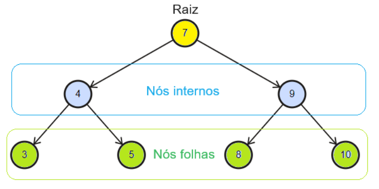

Estrutura de Árvore

No contexto da Engenharia de Software as árvores são estruturas de dados não lineares. Isso significa que os dados são dispostos de maneiras hierárquica. Uma Árvore é formada por um conjunto de elementos chamados Nós (Nodes).
Principais Componentes:- Raiz (Root): Nome designado ao nó superior da árvore, não possui pai.
- Nó Interno (Branch): Conectam a raiz a folhas, possuem pelo menos um pai e um filho.
- Nó Folha (Leaf): Nome designado aos nós inferiores, não possui filhos.
Árvores Binárias
As famosas Árvores Binárias (Binary Tree) são tipos fundamentais de árvores. Elas são caracterizadas por possuirem no máximo dois nós filhos um a esquerda e outro a direita.
Percursos em Árvores
Percursos (Tree Traversals) são algoritmos utilizados para percorrer estruturas de árvores. Eles são essencias para diversas operações como busca e ordenação. Esses percursos são divididos em dois grupos os Depth-First Search (DFS) e os Breadth First Search (BFS).
Glossário:
- Nó Pai: Quando o nó possui um filho.
- Nó Filho: Quando o nó possui um pai.
- Nível: É uma camada de nós.
- Altura: Número de camadas começando da folha mais profunda da árvore até a raiz.
- Nível: Número de camadas começando da raiz da árvore até a folha mais profunda.